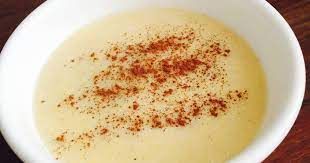

Harina de Maiz

This is a porridge like dish
This is a common dish in the Caribean
which is typically made for a low cost
heavy calorie breakfast.
Ingredients
- Milk
- Sugar
- Cornmeal
- Vanilla
- Butter
- Cinnamon
- Salt
Steps
- Add all the Ingredients to a pot
- Stir at medium heat for 10-15 minutes until Harina thickens
- Sprinkle additional Cinnamon on top and add fruit to taste